📄 บทคัดย่อ (Abstract)
การศึกษาครั้งนี้วิเคราะห์โครงสร้างและความเหลื่อมล้ำของรายได้ครัวเรือนไทย ปี 2566
โดยใช้ข้อมูล NSO จำนวน 6,829 ครัวเรือน 77 จังหวัด
ผสานเทคนิค Data Storytelling (Python, Pandas, Plotly) กับระบบ RAG บนโมเดล
Typhoon2.5-Qwen3-4b (4-bit quantization) เพื่อตอบคำถามเชิงนโยบายแบบโต้ตอบ
ผลพบว่ารายได้เฉลี่ย 26,279 บาท/เดือน ช่องว่างรายได้สูงสุด-ต่ำสุด 40.7 เท่า
จังหวัดนครราชสีมามีความเหลื่อมล้ำสูงสุด (CV=0.801) และกลุ่มผู้จัดการ/นักวิชาการมีรายได้สูงสุด 48,293 บาท
ขณะที่กลุ่มเกษตรกรต่ำสุด 15,804 บาท ระบบ AI บรรลุ BERTScore F1 = 0.7928
แสดงศักยภาพในการสนับสนุนการตัดสินใจเชิงหลักฐาน
#ความเหลื่อมล้ำรายได้
#DataStorytelling
#TyphoonAI
#HybridRAG
#นโยบายสาธารณะ
🔍 บทนำ (Introduction)
ความเหลื่อมล้ำทางรายได้เป็นปัญหาเชิงโครงสร้างที่สำคัญของเศรษฐกิจไทย
แม้ประเทศไทยมีการเติบโตทางเศรษฐกิจต่อเนื่อง แต่ผลประโยชน์ยังกระจายไม่เท่าเทียม
โดยเฉพาะระหว่างกลุ่มอาชีพและพื้นที่ (World Bank, 2023) วิกฤตโควิด-19 ซ้ำเติมแรงงานนอกระบบและเกษตรกร
ขณะที่การเข้าถึงข้อมูลเชิงลึกสำหรับผู้กำหนดนโยบายยังเป็นอุปสรรค
💡 แรงบันดาลใจ: สร้างเครื่องมือที่ช่วยให้ผู้กำหนดนโยบายเข้าถึงข้อมูลเชิงลึกได้ทันที
โดยไม่ต้องเป็นนักวิเคราะห์ข้อมูลมืออาชีพ — ผสาน Human Capital Theory (Becker, 1964)
กับ Data Storytelling และ Generative AI
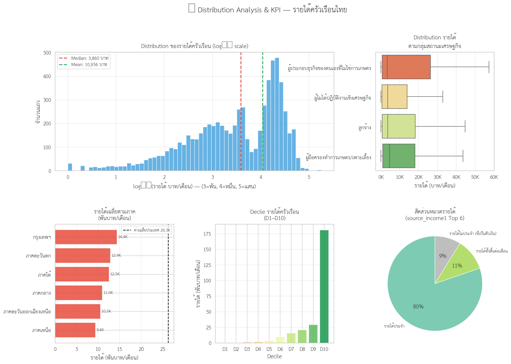
ภาพที่ 1: การกระจายรายได้และภาพรวม KPI ระดับประเทศ ปี 2566
⚙️ กระบวนการสร้างสรรค์ (Methodology)
📂 NSO Data
7,700 rows
→
🧹 Data Clean
6,829 rows
→
📊 EDA &
Storytelling
→
🔍 RAG
Index
→
🤖 Typhoon AI
Chatbot
- 1แหล่งข้อมูล: NSO ปี 2566 (data.go.th) 7,700 แถว → หลัง Data Cleaning คงเหลือ 6,829 แถว ครอบคลุม 77 จังหวัด
- 2Data Storytelling: EDA ด้วย Python (Pandas, Plotly) สร้าง 13 ภาพ Visualization — Cleveland Dot Plot, Boxplot, Diverging Bar, Treemap, Heatmap, Sankey
- 3RAG Architecture: BGE-M3 (Dense) + BM25 (Sparse) + Reciprocal Rank Fusion (RRF) + Cross-encoder Reranker → Knowledge Base 6,829 docs
- 4LLM: typhoon-ai/typhoon2.5-qwen3-4b ประมวลผล 4-bit quantization บน Kaggle T4 GPU (vRAM 16 GB) ผ่าน Gradio Web UI
- 5การประเมิน: ชุดคำถาม 51 ข้อ วัดด้วย BERTScore F1 = 0.7928 และ Faithfulness Score
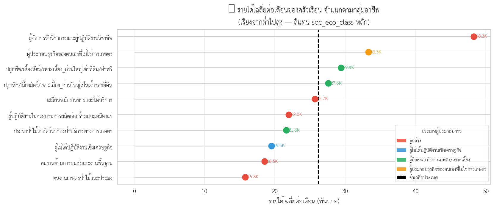
ภาพที่ 2: Boxplot เปรียบเทียบรายได้ตามกลุ่มอาชีพหลัก
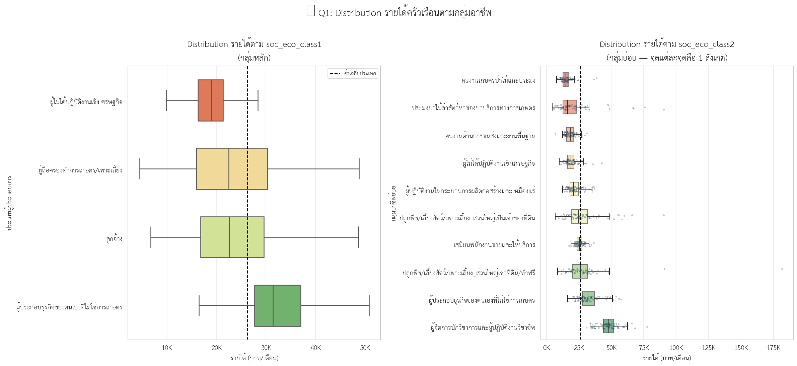
ภาพที่ 3: ช่องว่างรายได้ระหว่างกลุ่มอาชีพ (Max/Min ratio)
📊 ผลงานสร้างสรรค์ (Visual Insights)
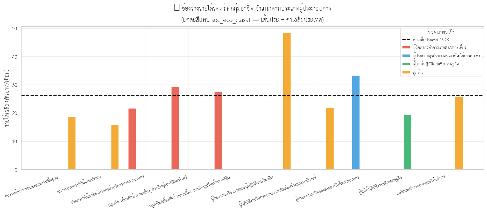
ภาพที่ 4: Deviation รายได้เทียบกับค่าเฉลี่ยประเทศ ตามกลุ่มอาชีพ
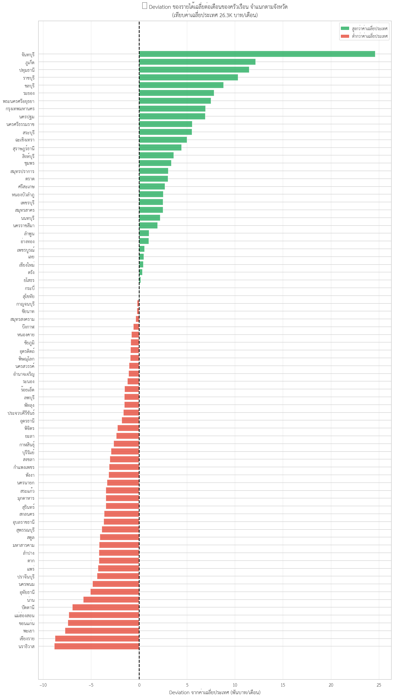
ภาพที่ 5: Inequality Matrix – รายได้เฉลี่ย vs CV ระดับจังหวัด
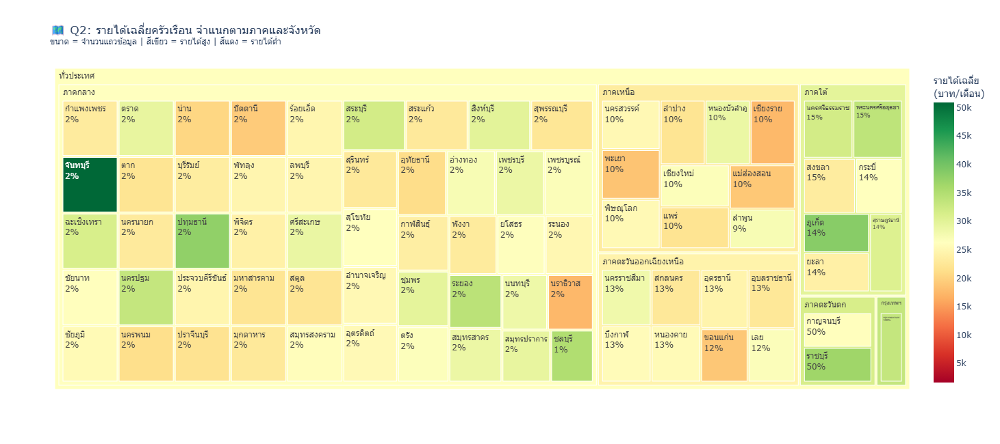
ภาพที่ 6: Treemap แสดงโครงสร้างรายได้ตามภูมิภาคและจังหวัด
💰 KPI ภาพรวมรายได้ครัวเรือนไทย ปี 2566
181,322รายได้สูงสุด (บาท)
💡 P10 = 126 บาท/เดือน · P99 = 55,238 บาท
สะท้อนความเหลื่อมล้ำรุนแรง — เจ้าของกิจการ ≥5 คน มีรายได้เฉลี่ยสูงสุด 71,543 บาท/เดือน
👥 Q1: ใครได้รับค่าตอบแทนเท่าใด?
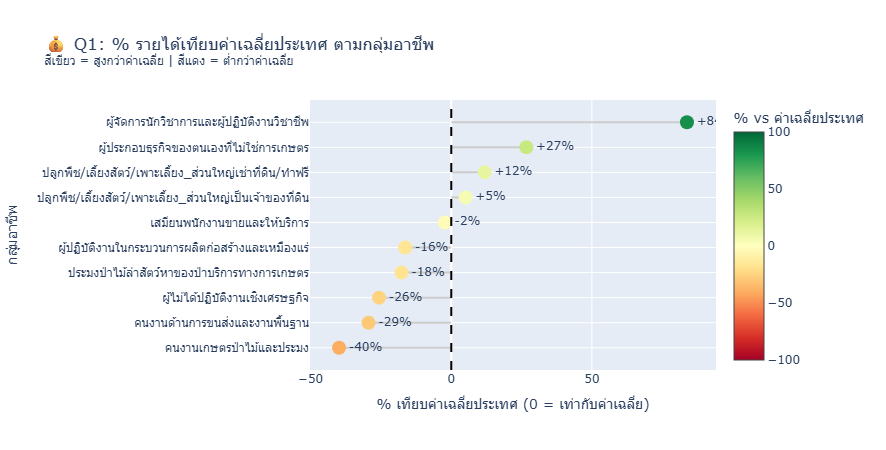
ภาพที่ 7: % รายได้เทียบค่าเฉลี่ยประเทศ กลุ่มอาชีพ (Diverging Bar)
📌 สูงสุด: ผู้จัดการ/นักวิชาการ/วิชาชีพ — 48,293 บาท/เดือน (+84%)
📌 ต่ำสุด: คนงานเกษตร ป่าไม้ ประมง — 15,804 บาท/เดือน (−40%)
📊 Gap สูงสุด-ต่ำสุด 3.1 เท่า
ข้อเสนอ: ยกระดับทักษะแรงงานเกษตร และปรับค่าแรงขั้นต่ำให้เหมาะสม
📍 Q2: ความเหลื่อมล้ำอยู่ที่ไหน?
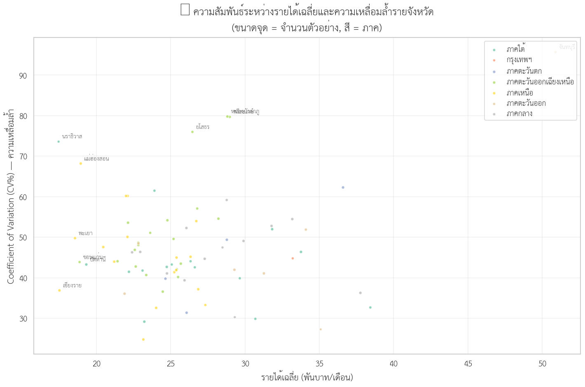
ภาพที่ 8: รายได้เฉลี่ย vs CV จังหวัด (ขนาดจุด = จำนวนข้อมูล)
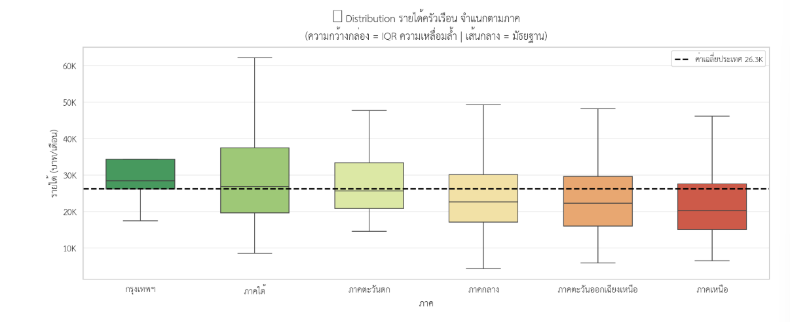
ภาพที่ 9: การกระจายรายได้แยกตามภูมิภาค (Treemap)
🏆 CV สูงสุด (เหลื่อมล้ำรุนแรง): นครราชสีมา (0.801) · อุบลราชธานี (0.765) · กรุงเทพฯ (0.746)
📉 รายได้เฉลี่ยต่ำสุด: นราธิวาส 17,456 · เชียงราย 17,462 · พะเยา 18,627 บาท/เดือน
🔍 Insight: รายได้สูงไม่ตรงกับความเหลื่อมล้ำต่ำ — กทม. CV สูง, นราธิวาสรายได้ต่ำ+CV สูง
📊 Q3: โครงสร้างรายได้ & ความเปราะบาง
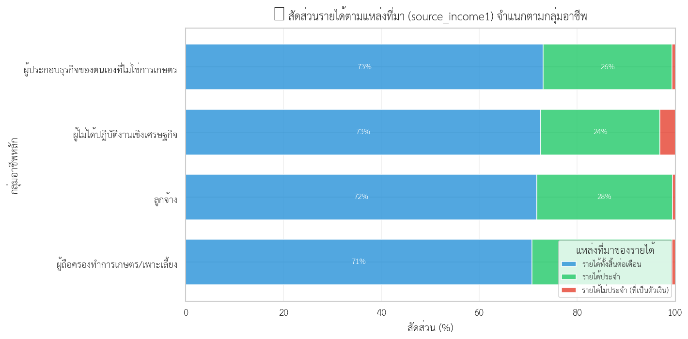
ภาพที่ 10: สัดส่วนรายได้ทั้งสิ้น ประจำ และไม่ประจำ ตามกลุ่มอาชีพ
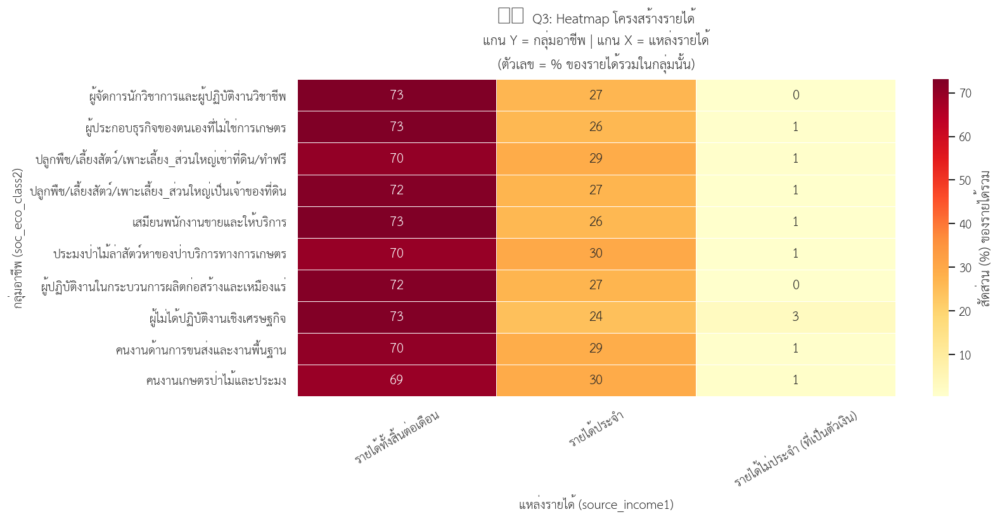
ภาพที่ 11: Vulnerability – สัดส่วนรายได้ไม่ประจำต่อรายได้รวม
🔹 ค้นพบสำคัญ: ทุกกลุ่มอาชีพพึ่งพารายได้ประจำ 27–30% ของรายได้รวม รายได้ไม่ประจำต่ำมาก (<1%) ขัดกับสมมติฐานเริ่มแรกที่คาดว่าเกษตรกรพึ่งรายได้ไม่ประจำสูง
⚠️ กลุ่มเปราะบาง: เกษตรกรผู้เช่าที่ดิน คนงานเกษตร ประมง — รายได้ผันผวนตามฤดูกาล ไม่มีสวัสดิการ
📌 นโยบาย: สร้างหลักประกันรายได้สำหรับแรงงานนอกระบบ ประกันรายได้เกษตรกร
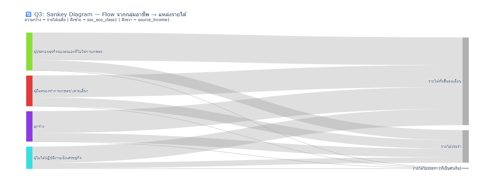
ภาพที่ 12: Sankey Diagram — กระแสรายได้จากกลุ่มอาชีพสู่แหล่งรายได้
🤖 การวิเคราะห์ & อภิปรายผล (Typhoon AI + RAG)
ระบบ AI (Typhoon2.5-Qwen3-4b + Hybrid RAG) สามารถตอบคำถามเชิงนโยบายได้แม่นยำ โดยดึงหลักฐานจาก Knowledge Base 6,829 เอกสาร:
❓ กลุ่มอาชีพใดมีรายได้เฉลี่ยสูงสุด?
✅ ผู้จัดการ/นักวิชาการ — 48,293 บาท/เดือน (ถูกต้อง)
❓ จังหวัดใดมีความเหลื่อมล้ำสูงสุด?
✅ นครราชสีมา CV = 0.801 (ถูกต้อง)
❓ นโยบายลดความเหลื่อมล้ำภาคเกษตร?
✅ สนับสนุนรายได้โดยตรง ประกันรายได้ เกษตรรวมกลุ่ม (ถูกต้อง)
🌟 คุณค่าเชิงนโยบาย: ลดภาระนักวิเคราะห์ เพิ่มการเข้าถึงข้อมูลเชิงลึก สำหรับผู้กำหนดนโยบายและสาธารณะ · ข้อจำกัด: แนะนำ Human-in-the-loop + Citation
BERTScore F1 = 0.7928
📌 บทสรุป & ข้อเสนอแนะ (Conclusion)
สรุปผลสำเร็จ: งานวิจัยเผยความเหลื่อมล้ำ 2 มิติหลัก (1) มิติกลุ่มอาชีพ Gap 3.1 เท่า และ (2) มิติพื้นที่ CV สูงสุด 0.801 โครงสร้างรายได้ของไทยพึ่งพารายได้ประจำเป็นหลัก และระบบ AI ที่พัฒนาขึ้นสามารถตอบคำถามนโยบายได้รวดเร็ว ถูกต้อง เป็นนวัตกรรมในการวิเคราะห์ข้อมูลสาธารณะ
ข้อเสนอแนะ:
1) ยกระดับรายได้กลุ่มล่างผ่าน Upskilling & ค่าแรงขั้นต่ำที่เหมาะสม
2) กระจายการลงทุนสู่จังหวัดรายได้ต่ำ (ภาคใต้ชายแดน ภาคเหนือตอนบน)
3) สร้างหลักประกันรายได้สำหรับเกษตรกรและแรงงานอิสระ
4) พัฒนาระบบติดตามข้อมูล Real-time ร่วมกับ AI Causal Inference
📚 บรรณานุกรม (References)
Becker, G. S. (1964). Human capital. NBER.
World Bank. (2023). Thailand Economic Monitor: Equity and Inclusion.
ธนาคารแห่งประเทศไทย. (2566). รายงานเศรษฐกิจและการเงิน.
สำนักงานสถิติแห่งชาติ. (2566). ข้อมูลรายได้เฉลี่ยต่อเดือนของครัวเรือน. data.go.th
Typhoon AI. (2025). typhoon2.5-qwen3-4b. HuggingFace.
McKinney, W. (2011). pandas: foundational Python library for data analysis.
Zhang, T. et al. (2019). BERTScore: Evaluating text generation with BERT. ICLR 2020.